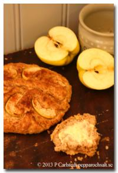

Äppelpaj i sconesformat? Inte riktigt, men minst lika gott! Och mer passande att äta till frukost.
Sätt ugnen på 250 grader. Blanda alla torra ingredienser samt honung och smör.
Finfördela smöret i mjölblandningen.
Tillsätt rivet äpple och sedan mjölk och rör snabbt ihop en
Skåra dem. Garnera gärna genom att trycka ner äppelklyftor i sconesen och strö över kanel.
Grädda mitt i ugnen i 12-15 minuter, tills sconesen fått fin färg.